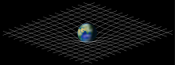
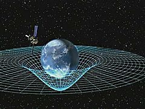

Einstein field equations
| Part of a series of articles about |
| General relativity |
|---|
|  |
The Einstein field equations (EFE; also known as Einstein's equations) comprise the set of 10 equations in Albert Einstein's general theory of relativity that describe the fundamental interaction of gravitation as a result of spacetime being curved by mass and energy.[1] First published by Einstein in 1915 as a tensor equation,[2] the EFE relate local spacetime curvature (expressed by the Einstein tensor) with the local energy and momentum within that spacetime (expressed by the stress–energy tensor).[3]
Similar to the way that electromagnetic fields are determined using charges and currents via Maxwell's equations, the EFE are used to determine the spacetime geometry resulting from the presence of mass–energy and linear momentum, that is, they determine the metric tensor of spacetime for a given arrangement of stress–energy in the spacetime. The relationship between the metric tensor and the Einstein tensor allows the EFE to be written as a set of non-linear partial differential equations when used in this way. The solutions of the EFE are the components of the metric tensor. The inertial trajectories of particles and radiation (geodesics) in the resulting geometry are then calculated using the geodesic equation.
As well as obeying local energy–momentum conservation, the EFE reduce to Newton's law of gravitation where the gravitational field is weak and velocities are much less than the speed of light.[4]
Exact solutions for the EFE can only be found under simplifying assumptions such as symmetry. Special classes of exact solutions are most often studied as they model many gravitational phenomena, such as rotating black holes and the expanding universe. Further simplification is achieved in approximating the actual spacetime as flat spacetime with a small deviation, leading to the linearized EFE. These equations are used to study phenomena such as gravitational waves.
Contents
Mathematical form
| Part of a series on |
| Spacetime |
|---|
|  |
|
General relativity Special relativity Doubly special relativity |
The Einstein field equations (EFE) may be written in the form:[5][1]
where Rμν is the Ricci curvature tensor, R is the scalar curvature, gμν is the metric tensor, Λ is the cosmological constant, G is Newton's gravitational constant, c is the speed of light in vacuum, and Tμν is the stress–energy tensor.
The EFE is a tensor equation relating a set of symmetric 4 × 4 tensors. Each tensor has 10 independent components. The four Bianchi identities reduce the number of independent equations from 10 to 6, leaving the metric with four gauge fixing degrees of freedom, which correspond to the freedom to choose a coordinate system.
Although the Einstein field equations were initially formulated in the context of a four-dimensional theory, some theorists have explored their consequences in n dimensions.[6] The equations in contexts outside of general relativity are still referred to as the Einstein field equations. The vacuum field equations (obtained when T is identically zero) define Einstein manifolds.
Despite the simple appearance of the equations they are actually quite complicated. Given a specified distribution of matter and energy in the form of a stress–energy tensor, the EFE are understood to be equations for the metric tensor gμν, as both the Ricci tensor and scalar curvature depend on the metric in a complicated nonlinear manner. In fact, when fully written out, the EFE are a system of ten coupled, nonlinear, hyperbolic-elliptic partial differential equations.[citation needed]
One can write the EFE in a more compact form by defining the Einstein tensor

which is a symmetric second-rank tensor that is a function of the metric. The EFE can then be written as
In standard units, each term on the left has units of 1/length2. With this choice of Einstein constant as 8πG/c4, then the stress-energy tensor on the right side of the equation must be written with each component in units of energy-density (i.e., energy per volume = pressure).
Using geometrized units where G = c = 1, this can be rewritten as
The expression on the left represents the curvature of spacetime as determined by the metric; the expression on the right represents the matter/energy content of spacetime. The EFE can then be interpreted as a set of equations dictating how matter/energy determines the curvature of spacetime.
These equations, together with the geodesic equation,[7] which dictates how freely-falling matter moves through space-time, form the core of the mathematical formulation of general relativity.
Sign convention
The above form of the EFE is the standard established by Misner, Thorne, and Wheeler.[8] The authors analyzed all conventions that exist and classified according to the following three signs (S1, S2, S3):
![{\displaystyle {\begin{aligned}g_{\mu \nu }&=[S1]\times \operatorname {diag} (-1,+1,+1,+1)\\[6pt]{R^{\mu }}_{\alpha \beta \gamma }&=[S2]\times \left(\Gamma _{\alpha \gamma ,\beta }^{\mu }-\Gamma _{\alpha \beta ,\gamma }^{\mu }+\Gamma _{\sigma \beta }^{\mu }\Gamma _{\gamma \alpha }^{\sigma }-\Gamma _{\sigma \gamma }^{\mu }\Gamma _{\beta \alpha }^{\sigma }\right)\\[6pt]G_{\mu \nu }&=[S3]\times {\frac {8\pi G}{c^{4}}}T_{\mu \nu }\end{aligned}}}](EFE-Wikipedia-Dateien/a92147546b1d644a097fe983f5b6ba27ee31ea99.svg)
The third sign above is related to the choice of convention for the Ricci tensor:
With these definitions Misner, Thorne, and Wheeler classify themselves as (+ + +), whereas Weinberg (1972)[9] and Peacock (1994)[10] are (+ − −), Peebles (1980)[citation needed] and Efstathiou (1990)[citation needed] are (− + +), Rindler (1977)[citation needed], Atwater (1974)[citation needed], Collins Martin & Squires (1989)[citation needed] are (− + −).
Authors including Einstein have used a different sign in their definition for the Ricci tensor which results in the sign of the constant on the right side being negative
The sign of the (very small) cosmological term would change in both these versions, if the (+ − − −) metric sign convention is used rather than the MTW (− + + +) metric sign convention adopted here.
Equivalent formulations
Taking the trace with respect to the metric of both sides of the EFE one gets
where D is the spacetime dimension. This expression can be rewritten as
If one adds −1/2gμν times this to the EFE, one gets the following equivalent "trace-reversed" form
For example, in D = 4 dimensions this reduces to
Reversing the trace again would restore the original EFE. The trace-reversed form may be more convenient in some cases (for example, when one is interested in weak-field limit and can replace gμν in the expression on the right with the Minkowski metric without significant loss of accuracy).
The cosmological constant
Einstein modified his original field equations to include a cosmological constant term Λ proportional to the metric
Since Λ is constant, the energy conservation law is unaffected.
The cosmological constant term was originally introduced by Einstein to allow for a universe that is not expanding or contracting. This effort was unsuccessful because:
- the universe described by this theory was unstable, and
- observations by Edwin Hubble confirmed that our universe is expanding.
So, Einstein abandoned Λ, calling it the "biggest blunder [he] ever made".[11]
Despite Einstein's motivation for introducing the cosmological constant term, there is nothing inconsistent with the presence of such a term in the equations. For many years the cosmological constant was almost universally considered to be 0. However, recent improved astronomical techniques have found that a positive value of Λ is needed to explain the accelerating universe.[12][13] However, the cosmological constant is negligible at the scale of a galaxy or smaller.
Einstein thought of the cosmological constant as an independent parameter, but its term in the field equation can also be moved algebraically to the other side, written as part of the stress–energy tensor:
The resulting vacuum energy density is constant and given by
The existence of a cosmological constant is thus equivalent to the existence of a non-zero vacuum energy. Thus, the terms "cosmological constant" and "vacuum energy" are now used interchangeably in general relativity.
Features
Conservation of energy and momentum
General relativity is consistent with the local conservation of energy and momentum expressed as
- .
showDerivation of local energy-momentum conservation
which expresses the local conservation of stress–energy. This conservation law is a physical requirement. With his field equations Einstein ensured that general relativity is consistent with this conservation condition.
Nonlinearity
The nonlinearity of the EFE distinguishes general relativity from many other fundamental physical theories. For example, Maxwell's equations of electromagnetism are linear in the electric and magnetic fields, and charge and current distributions (i.e. the sum of two solutions is also a solution); another example is Schrödinger's equation of quantum mechanics which is linear in the wavefunction.
The correspondence principle
The EFE reduce to Newton's law of gravity by using both the weak-field approximation and the slow-motion approximation. In fact, the constant G appearing in the EFE is determined by making these two approximations.
showDerivation of Newton's law of gravity


Vacuum field equations

{kind=link}
{kind=link}
{kind=link}
If the energy-momentum tensor Tμν is zero in the region under consideration, then the field equations are also referred to as the vacuum field equations. By setting Tμν = 0 in the trace-reversed field equations, the vacuum equations can be written as
In the case of nonzero cosmological constant, the equations are
The solutions to the vacuum field equations are called vacuum solutions. Flat Minkowski space is the simplest example of a vacuum solution. Nontrivial examples include the Schwarzschild solution and the Kerr solution.
Manifolds with a vanishing Ricci tensor, Rμν = 0, are referred to as Ricci-flat manifolds and manifolds with a Ricci tensor proportional to the metric as Einstein manifolds.
Einstein–Maxwell equations
If the energy-momentum tensor Tμν is that of an electromagnetic field in free space, i.e. if the electromagnetic stress–energy tensor
is used, then the Einstein field equations are called the Einstein–Maxwell equations (with cosmological constant Λ, taken to be zero in conventional relativity theory):
Additionally, the covariant Maxwell equations are also applicable in free space:
where the semicolon represents a covariant derivative, and the brackets denote anti-symmetrization. The first equation asserts that the 4-divergence of the two-form F is zero, and the second that its exterior derivative is zero. From the latter, it follows by the Poincaré lemma that in a coordinate chart it is possible to introduce an electromagnetic field potential Aα such that
in which the comma denotes a partial derivative. This is often taken as equivalent to the covariant Maxwell equation from which it is derived.[14] However, there are global solutions of the equation which may lack a globally defined potential.[15]
Solutions
The solutions of the Einstein field equations are metrics of spacetime. These metrics describe the structure of the spacetime including the inertial motion of objects in the spacetime. As the field equations are non-linear, they cannot always be completely solved (i.e. without making approximations). For example, there is no known complete solution for a spacetime with two massive bodies in it (which is a theoretical model of a binary star system, for example). However, approximations are usually made in these cases. These are commonly referred to as post-Newtonian approximations. Even so, there are numerous cases where the field equations have been solved completely, and those are called exact solutions.[6]
The study of exact solutions of Einstein's field equations is one of the activities of cosmology. It leads to the prediction of black holes and to different models of evolution of the universe.
One can also discover new solutions of the Einstein field equations via the method of orthonormal frames as pioneered by Ellis and MacCallum.[16] In this approach, the Einstein field equations are reduced to a set of coupled, nonlinear, ordinary differential equations. As discussed by Hsu and Wainwright,[17] self-similar solutions to the Einstein field equations are fixed points of the resulting dynamical system. New solutions have been discovered using these methods by LeBlanc [18] and Kohli and Haslam.[19]
The linearized EFE
The nonlinearity of the EFE makes finding exact solutions difficult. One way of solving the field equations is to make an approximation, namely, that far from the source(s) of gravitating matter, the gravitational field is very weak and the spacetime approximates that of Minkowski space. The metric is then written as the sum of the Minkowski metric and a term representing the deviation of the true metric from the Minkowski metric, with terms that are quadratic in or higher powers of the deviation being ignored. This linearization procedure can be used to investigate the phenomena of gravitational radiation.
Polynomial form
One might think that EFE are non-polynomial since they contain the inverse of the metric tensor. However, the equations can be arranged so that they contain only the metric tensor and not its inverse. First, the determinant of the metric in 4 dimensions can be written:
using the Levi-Civita symbol; and the inverse of the metric in 4 dimensions can be written as:
Substituting this definition of the inverse of the metric into the equations then multiplying both sides by det(g) until there are none left in the denominator results in polynomial equations in the metric tensor and its first and second derivatives. The action from which the equations are derived can also be written in polynomial form by suitable redefinitions of the fields.[20]
See also
Notes
- ^ Jump up to: a b Einstein, Albert (1916). "The Foundation of the General Theory of Relativity". Annalen der Physik. 354 (7): 769. Bibcode:1916AnP...354..769E. doi:10.1002/andp.19163540702. Archived from the original (PDF) on 2012-02-06.
- ^ Einstein, Albert (November 25, 1915). "Die Feldgleichungen der Gravitation". Sitzungsberichte der Preussischen Akademie der Wissenschaften zu Berlin: 844–847. Retrieved 2017-08-21.
- ^ Misner, Thorne & Wheeler (1973), p. 916 [ch. 34].
- ^ Carroll, Sean (2004). Spacetime and Geometry – An Introduction to General Relativity. pp. 151–159. ISBN 0-8053-8732-3.
- ^ Grøn, Øyvind; Hervik, Sigbjorn (2007). Einstein's General Theory of Relativity: With Modern Applications in Cosmology (illustrated ed.). Springer Science & Business Media. p. 180. ISBN 978-0-387-69200-5.
- ^ Jump up to: a b Stephani, Hans; Kramer, D.; MacCallum, M.; Hoenselaers, C.; Herlt, E. (2003). Exact Solutions of Einstein's Field Equations. Cambridge University Press. ISBN 0-521-46136-7.
- ^ Weinberg, Steven (1993). Dreams of a Final Theory: the search for the fundamental laws of nature. Vintage Press. pp. 107, 233. ISBN 0-09-922391-0.
- ^ Misner, Thorne & Wheeler (1973), p. 501ff.
- ^ Weinberg (1972).
- ^ Peacock (1994).
- ^ Gamow, George (April 28, 1970). My World Line : An Informal Autobiography. Viking Adult. ISBN 0-670-50376-2. Retrieved 2007-03-14.
- ^ Wahl, Nicolle (2005-11-22). "Was Einstein's 'biggest blunder' a stellar success?". Archived from the original on 2007-03-07. Retrieved 2007-03-14.
- ^ Turner, Michael S. (May 2001). "Making Sense of the New Cosmology". Int. J. Mod. Phys. A. 17 (S1): 180–196. arXiv:astro-ph/0202008. Bibcode:2002IJMPA..17S.180T. doi:10.1142/S0217751X02013113.
- ^ Brown, Harvey (2005). Physical Relativity. Oxford University Press. p. 164. ISBN 978-0-19-927583-0.
- ^ Trautman, Andrzej (1977). "Solutions of the Maxwell and Yang–Mills equations associated with Hopf fibrings". International Journal of Theoretical Physics. 16 (9): 561–565. Bibcode:1977IJTP...16..561T. doi:10.1007/BF01811088..
- ^ Ellis, G. F. R.; MacCallum, M. (1969). "A class of homogeneous cosmological models". Comm. Math. Phys. 12 (2): 108–141. Bibcode:1969CMaPh..12..108E. doi:10.1007/BF01645908.
- ^ Hsu, L.; Wainwright, J (1986). "Self-similar spatially homogeneous cosmologies: orthogonal perfect fluid and vacuum solutions". Class. Quantum Grav. 3: 1105–1124. Bibcode:1986CQGra...3.1105H. doi:10.1088/0264-9381/3/6/011.
- ^ LeBlanc, V. G. (1997). "Asymptotic states of magnetic Bianchi I cosmologies". Class. Quantum Grav. 14: 2281. Bibcode:1997CQGra..14.2281L. doi:10.1088/0264-9381/14/8/025.
- ^ Kohli, Ikjyot Singh; Haslam, Michael C. (2013). "Dynamical systems approach to a Bianchi type I viscous magnetohydrodynamic model". Phys. Rev. D. 88: 063518. arXiv:1304.8042. Bibcode:2013PhRvD..88f3518K. doi:10.1103/physrevd.88.063518.
- ^ Katanaev, M. O. (July 7, 2005). "Polynomial form of the Hilbert–Einstein action". Gen. Rel. Grav. 38: 1233–1240. arXiv:gr-qc/0507026. Bibcode:2006GReGr..38.1233K. doi:10.1007/s10714-006-0310-5.
References
See General relativity resources.
- Misner, Charles W.; Thorne, Kip S.; Wheeler, John Archibald (1973). Gravitation. San Francisco: W. H. Freeman. ISBN 978-0-7167-0344-0.
- Weinberg, Steven (1972). Gravitation and Cosmology. John Wiley & Sons. ISBN 0-471-92567-5.
- Peacock, John A. (1994). Cosmological Physics. Cambridge University Press. ISBN 978-0521410724.
External links
| Wikibooks has a book on the topic of: General Relativity |
| Wikiversity has learning resources about General Relativity |
- Hazewinkel, Michiel, ed. (2001) [1994], "Einstein equations", Encyclopedia of Mathematics, Springer Science+Business Media B.V. / Kluwer Academic Publishers, ISBN 978-1-55608-010-4
- Caltech Tutorial on Relativity — A simple introduction to Einstein's Field Equations.
- The Meaning of Einstein's Equation — An explanation of Einstein's field equation, its derivation, and some of its consequences
- Video Lecture on Einstein's Field Equations by MIT Physics Professor Edmund Bertschinger.
- Arch and scaffold: How Einstein found his field equations Physics Today November 2015, History of the Development of the Field Equations
- The Einstein field equation on the wall of the Museum Boerhaave in downtown Leiden
{kind=link}